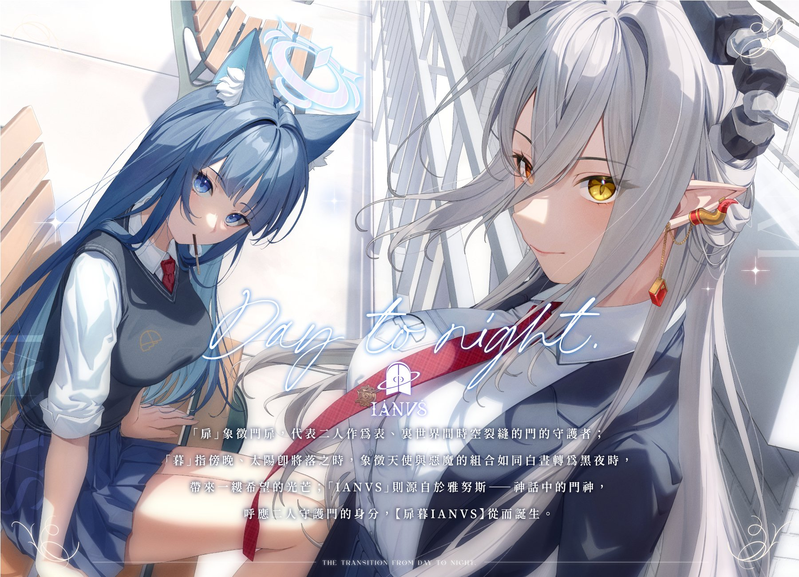
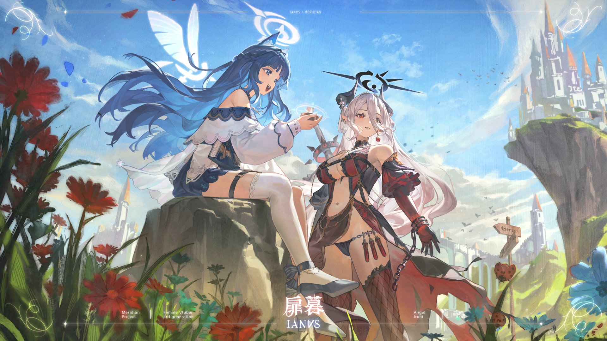
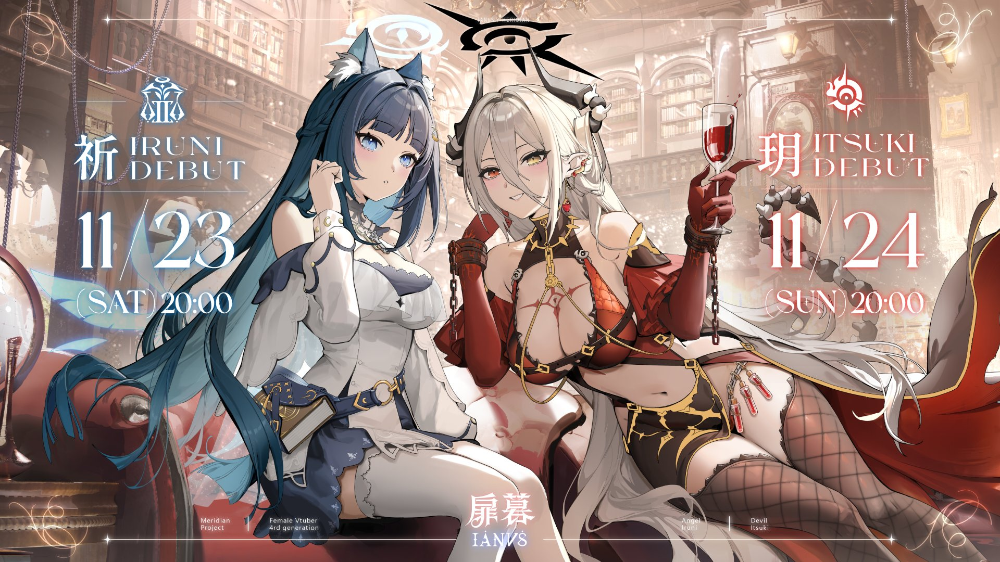
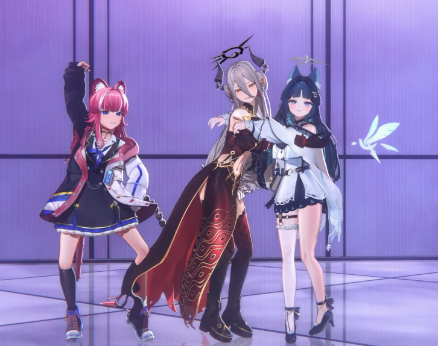

info關於扉暮

她們是台灣Vtuber公司子午計畫旗下的四期生：扉暮IANVS
是在子午計畫推出許多藝人後，第一次的雙人團體出道，不僅是新的嘗試，兩人在直播的互動和默契也帶給觀眾更豐富更有趣的體驗。
經營模式上，兩人在出道初期互動相當頻繁，設定上為上下屬，但實際似乎更接近主人與狗(？好怪好喜歡)
兩人維持著商業關係，也讓她們都很清楚彼此界線，就是超級好朋友，又或是說超越友誼的關係
知道何時可以做效果讓粉絲看得開心，但也會在彼此的生日和紀念日時，互相送上真心的祝福和禮物
雖然雙方皆稱就只是工業糖精，但這樣的CP，我嗑一下怎麼了，又不會成為真的，如果是演的， 嗑一下怎麼了，演就是給我嗑的。


group 成員介紹
| 成員名稱 | 代表色 | 特色 | 生日 | 初配信日期 |
|---|---|---|---|---|
| 祈Iruni / 魯尼 | 深藍色 | 可愛、治癒人心、偶像感、缺德天使、算有氣質 | 0929 | 2024/11/23 |
| 玥Itsuki / 王月 | 紅色 | 聲之惡魔、搞耍小丑、賭狗、才華洋溢、直率(神木) | 0109 | 2024/11/24 |
| 扉暮 IANVS | 非常好相聲團體 | 常常吵要解散但感情真的很好 | 一起直播就會是八點檔現場 | 我是扉暮推廣大使YESYES |
兩人各有特色，都很會變換多種聲線，但設定卻好像給錯人一樣，本為惡魔卻被天使壓在底下打，十分具有反差感。
一位擅長ASMR，偶爾也會唱一些她最愛的古風歌，熱愛可愛的事物和遊戲，雖為社恐但很愛聊天，是個心思細膩的麻煩女人。
而另外一位唱歌非常好聽，能駕馭多種風格的音樂，也會自己寫歌，還會做一些很特別很奇怪的ASMR...但聊起天和玩遊戲就會變成斜咖，極度斜的那種。
videocam 相關影片
初亮相及雙人合唱、各自的原創曲
非常好聽建議播個一百遍
mood_heart 官方連結
- 子午計畫官方網站
- 祈Iruni女士的推特
- 玥Itsuki女士的推特
-


- 最棒的扉暮：D